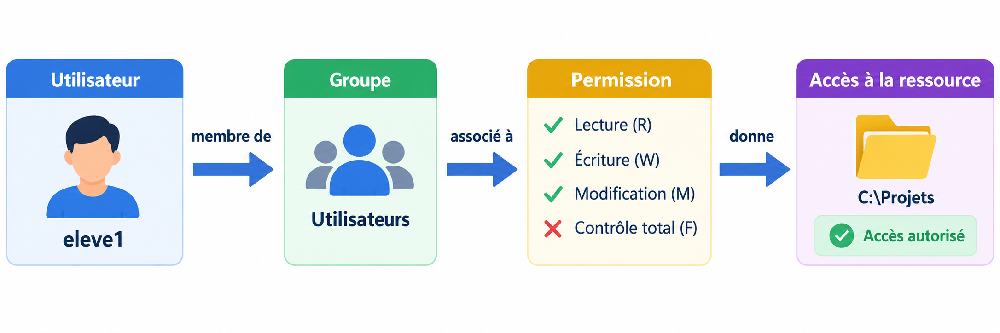
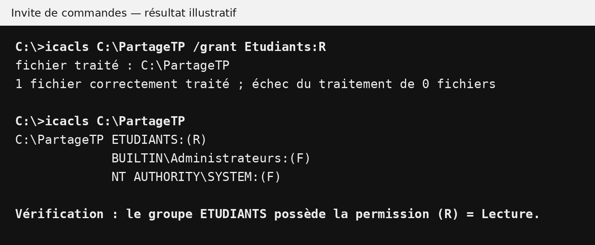

Permissions et contrôle d’accès
Comprendre comment Windows contrôle l’accès aux fichiers et dossiers, puis configurer, vérifier et diagnostiquer les permissions NTFS à l’aide de l’interface graphique et de la commande icacls.
icacls, puis de vérifier l’accès obtenu.
1. Qu’est-ce qu’une permission ?
Une permission est une autorisation associée à une ressource. Elle indique ce qu’une identité peut faire avec un fichier ou un dossier : le lire, le modifier, l’exécuter ou en contrôler davantage d’aspects.
Dans Windows, le contrôle d’accès permet donc de répondre à une question fondamentale : qui peut faire quoi sur quelle ressource ?
Etudiants peut recevoir la permission de lecture sur un dossier de documentation, tandis que le groupe Enseignants peut recevoir une permission permettant de modifier son contenu.Mini-exercice 1
Pour un dossier contenant les consignes d’un examen, proposez un droit adapté aux étudiants et un droit adapté aux enseignants. Justifiez.
Voir la solution du mini-exercice 1
Proposition : pour les étudiants, R (Lecture) convient afin de consulter les consignes sans les modifier. Pour les enseignants, M (Modification) peut convenir s’ils doivent mettre à jour les documents. Ce choix respecte le principe du moindre privilège.
2. NTFS et contrôle d’accès
NTFS signifie New Technology File System. C’est un système de fichiers Windows qui prend notamment en charge des mécanismes de sécurité permettant d’associer des permissions aux fichiers et dossiers.
Les permissions étudiées dans cette leçon sont donc des permissions NTFS. Elles concernent les ressources stockées sur un volume utilisant NTFS.
Mini-exercice 2
Expliquez pourquoi il faut connaître le système de fichiers utilisé avant d’appliquer une procédure portant spécifiquement sur les permissions NTFS.
Voir la solution du mini-exercice 2
Il faut d’abord vérifier le système de fichiers, car la procédure étudiée concerne les permissions NTFS. Si la ressource n’est pas stockée sur un volume NTFS, on ne peut pas supposer que les mêmes mécanismes et la même procédure s’appliquent.
3. Utilisateurs, groupes et permissions
Windows peut attribuer des permissions à une identité telle qu’un utilisateur ou un groupe. Dans un environnement comportant plusieurs utilisateurs, l’utilisation des groupes facilite l’administration.

Cette approche évite de configurer séparément les mêmes permissions pour de nombreux comptes. Lorsqu’un nouvel utilisateur doit recevoir les mêmes accès que ses collègues, il peut être ajouté au groupe approprié.
eleve1, eleve2 et eleve3 appartiennent au groupe Etudiants, une permission accordée à ce groupe peut s’appliquer aux membres concernés.Mini-exercice 3
Un laboratoire contient 25 étudiants devant recevoir le même accès à un dossier. Comparez l’attribution individuelle des permissions et l’utilisation d’un groupe.
Voir la solution du mini-exercice 3
Attribuer les permissions individuellement oblige à configurer et maintenir les droits de 25 comptes. Avec un groupe Etudiants, on attribue la permission au groupe, puis les étudiants membres bénéficient de l’accès correspondant. Cette méthode est plus simple à administrer.
4. Qu’est-ce qu’une ACL ?
ACL signifie Access Control List, ou liste de contrôle d’accès. Une ACL contient des entrées décrivant les permissions associées à différentes identités sur une ressource.
Chaque entrée de contrôle d’accès associe notamment une identité à des droits. Lorsqu’un utilisateur tente d’accéder à une ressource, Windows évalue les informations de sécurité applicables afin de déterminer l’accès effectif.
Mini-exercice 4
Expliquez avec vos mots la différence entre un groupe et une ACL.
Voir la solution du mini-exercice 4
Un groupe rassemble des comptes afin de faciliter leur administration. Une ACL est une liste de règles d’accès attachée à une ressource et indiquant quelles identités disposent de quels droits.
5. Permissions NTFS courantes
Les permissions peuvent être simples ou composées de plusieurs droits. Pour cette leçon, nous utilisons principalement les niveaux suivants.
| Code | Permission | Idée générale |
|---|---|---|
R | Read — Lecture | Lire le contenu autorisé. |
W | Write — Écriture | Créer ou écrire selon les droits associés. |
RX | Read and Execute | Lire et exécuter. |
M | Modify — Modification | Lire, écrire, modifier et supprimer selon les droits associés. |
F | Full control — Contrôle total | Contrôle très étendu de la ressource, y compris des opérations de gestion des permissions selon le contexte. |
Mini-exercice 5
Un étudiant doit consulter les documents d’un dossier sans les modifier. Parmi R, M et F, quelle permission répond le mieux au besoin ? Expliquez.
Voir la solution du mini-exercice 5
La permission R est la plus adaptée : l’étudiant doit seulement consulter les documents. M et F accorderaient davantage de droits que nécessaire.
6. Permissions explicites et permissions héritées
Une permission explicite est configurée directement sur le fichier ou le dossier concerné pour une identité donnée.
Une permission héritée provient d’un dossier parent. L’héritage permet de propager des règles d’accès dans une arborescence sans devoir configurer manuellement chaque fichier et chaque sous-dossier.
C:\Cours transmet certaines permissions à ses sous-dossiers, C:\Cours\TP peut recevoir ces règles par héritage.Mini-exercice 6
Un utilisateur conserve l’accès à un dossier après la suppression d’une entrée explicite. Donnez deux explications possibles à partir des notions de cette section.
Voir la solution du mini-exercice 6
Deux explications possibles : l’utilisateur reçoit encore une permission héritée d’un dossier parent, ou il appartient à un autre groupe auquel une permission donnant accès à la ressource est accordée.
7. Autoriser, refuser et déterminer l’accès effectif
Le contrôle d’accès peut comprendre des autorisations et, dans certains contextes, des refus explicites. L’accès réellement obtenu par un utilisateur peut dépendre de plusieurs entrées : permissions directes, permissions héritées et appartenance à différents groupes.
L’accès effectif représente les droits dont l’utilisateur dispose réellement après l’évaluation des règles applicables.
Mini-exercice 7
Pourquoi faut-il examiner les groupes auxquels appartient un utilisateur lorsqu’on cherche à comprendre son accès réel à un dossier ?
Voir la solution du mini-exercice 7
Les groupes doivent être examinés parce qu’un utilisateur peut recevoir des permissions indirectement grâce à son appartenance à un ou plusieurs groupes. L’accès effectif ne dépend donc pas uniquement des permissions attribuées directement au compte.
8. Configurer les permissions avec l’interface graphique
Windows permet d’observer et de modifier les permissions NTFS depuis les propriétés d’un fichier ou d’un dossier.
- Créer un dossier de laboratoire, par exemple
C:\PartageTP. - Cliquer avec le bouton droit sur le dossier puis choisir Propriétés.
- Ouvrir l’onglet Sécurité.
- Observer les utilisateurs et groupes affichés.
- Sélectionner une identité et examiner ses permissions.
- Utiliser les commandes de modification uniquement dans le dossier de laboratoire prévu.
- Valider puis rouvrir l’onglet Sécurité pour vérifier le résultat.
Les intitulés exacts peuvent varier selon la version de Windows, l’édition et le contexte de la ressource.
Mini-exercice 8
Dans votre VM, créez un dossier de test. Ouvrez son onglet Sécurité et relevez au moins trois identités présentes ainsi que les permissions affichées pour l’une d’elles. Ne modifiez pas un dossier système.
Voir la solution du mini-exercice 8
Exemple de résultat attendu : après avoir créé C:\PartageTP, ouvrez Propriétés → Sécurité. Relevez trois identités réellement affichées dans votre VM et notez les permissions de l’une d’elles. Les identités peuvent varier selon l’installation Windows : la réponse doit donc être basée sur l’observation de votre propre machine.
9. Méthode de travail avant une modification
Une modification de permissions doit être préparée et vérifiée. Avant d’appliquer un changement, identifiez clairement la ressource, l’identité concernée et le niveau d’accès attendu.
C:\Windows ou d’autres ressources essentielles.Mini-exercice 9
Expliquez pourquoi il faut relever les permissions existantes avant de modifier l’ACL d’un dossier.
Voir la solution du mini-exercice 9
Relever les permissions existantes permet de connaître l’état initial de l’ACL, d’identifier les règles explicites ou héritées déjà présentes et de comparer cet état avec le résultat obtenu après la modification. Cela facilite aussi le diagnostic en cas de résultat inattendu.
10. Commande icacls — afficher les permissions
10.1 Définition
icacls est une commande Windows permettant d’afficher et de modifier les listes de contrôle d’accès (ACL) des fichiers et des dossiers. Avant toute modification, il est recommandé de commencer par afficher l’état actuel des permissions.
10.2 Syntaxe générale
icacls: nom de la commande.<chemin>: fichier ou dossier dont on souhaite afficher les permissions.
10.3 Exemple simple
icacls demande à Windows d’afficher l’ACL du dossier C:\PartageTP. La commande ne modifie rien : elle permet d’observer les identités présentes et les permissions associées.10.4 Exemple 2
C:\Cours avant d’apporter une modification. Vous devez d’abord savoir quels utilisateurs et groupes apparaissent dans son ACL.Voir la solution
Analysez ensuite le résultat affiché. Cette étape permet d’observer les permissions actuelles avant toute modification.
10.5 Obtenir l’aide de la commande
/? affiche l’aide intégrée de icacls, notamment les opérations et paramètres disponibles.Mini-exercice 10
Créez C:\PartageTP, affichez son ACL avec icacls et identifiez les identités visibles dans le résultat.
Voir la solution du mini-exercice 10
La première commande crée le dossier s’il n’existe pas. La seconde affiche son ACL. Il faut ensuite relever dans la sortie les utilisateurs ou groupes visibles et les permissions associées.
11. Accorder une permission avec icacls /grant
11.1 Rôle
L’opération /grant permet d’accorder une permission à un utilisateur ou à un groupe sur une ressource.
11.2 Syntaxe générale
<chemin>: ressource à laquelle la permission sera appliquée./grant: opération qui accorde une permission.<utilisateur_ou_groupe>: identité qui recevra la permission.<permission>: niveau d’accès, par exempleR,RX,W,MouF.
11.3 Exemple 1 — Lecture (R)
Etudiants doivent consulter les documents de C:\PartageTP sans recevoir inutilement une permission plus élevée.La permission R signifie Lecture. Le groupe peut lire le contenu autorisé.
11.4 Exemple 2 — Lecture et exécution (RX)
UtilisateursLab doit pouvoir lire et exécuter les éléments autorisés dans C:\Outils.RX signifie Lecture et exécution.
11.5 Exemple 3 — Écriture (W)
DepotTP doit recevoir un droit d’écriture sur le dossier C:\Depot.W signifie Écriture. Cette permission concerne les opérations d’écriture autorisées par ce niveau de droit.
11.6 Exemple 4 — Modification (M)
Projet doivent travailler sur les fichiers du dossier C:\Projet : lire, écrire, modifier et supprimer selon les droits associés.M signifie Modification. Il convient lorsqu’un groupe doit réellement travailler sur le contenu plutôt que seulement le consulter.
11.7 Exemple 5 — Contrôle total (F)
AdminsLab doit recevoir un contrôle très étendu sur la ressource.F signifie Contrôle total. Cette permission est beaucoup plus étendue et ne doit pas être accordée automatiquement lorsqu’un niveau inférieur suffit.
F simplement pour éviter d’analyser le besoin.11.8 Vérifier le résultat
Après un /grant, affichez de nouveau l’ACL. Par exemple :
La capture suivante illustre le type de résultat attendu après l’attribution de la lecture au groupe Etudiants.

/grant Etudiants:R.11.9 Comparaison rapide
| Permission | Commande d’exemple | Besoin illustré |
|---|---|---|
R | icacls C:\PartageTP /grant Etudiants:R | Consulter. |
RX | icacls C:\Outils /grant UtilisateursLab:RX | Lire et exécuter. |
W | icacls C:\Depot /grant DepotTP:W | Écrire. |
M | icacls C:\Projet /grant Projet:M | Travailler et modifier le contenu. |
F | icacls C:\LabTest /grant AdminsLab:F | Contrôle total dans le laboratoire. |
Voir la solution
Situation : le groupe Stagiaires doit seulement consulter les fichiers du dossier C:\Documentation.
La première commande accorde la lecture. La seconde affiche l’ACL pour vérifier le résultat.
Mini-exercice 11
Pour chacun des besoins suivants, choisissez entre R, RX, W, M et F, puis écrivez la commande icacls /grant correspondante : consulter des documents, exécuter un outil, déposer du contenu, modifier un projet et administrer complètement un dossier de laboratoire.
Voir la solution du mini-exercice 11
Une solution possible pour chaque besoin :
R sert à consulter, RX à lire et exécuter, W à écrire, M à travailler sur le contenu et F au contrôle total dans le contexte de laboratoire.
12. Accorder une permission avec héritage : (OI) et (CI)
12.1 Rôle
Lorsqu’une permission est configurée sur un dossier, il peut être nécessaire de préciser comment cette permission doit être héritée par son contenu. Avec icacls, (OI) et (CI) sont des indicateurs d’héritage.
12.2 Syntaxe générale
| Élément | Signification |
|---|---|
(OI) | Object inherit : héritage vers les fichiers. |
(CI) | Container inherit : héritage vers les sous-dossiers. |
(OI) et (CI) sont des indicateurs placés dans la spécification de permission ; ce ne sont pas des options commençant par /.
12.3 Exemple simple
R est accordée au groupe Etudiants. (OI) prévoit l’héritage vers les fichiers et (CI) vers les sous-dossiers.12.4 Exemple 2
C:\Cours contient plusieurs fichiers et sous-dossiers. Le groupe Etudiants doit pouvoir lire le contenu actuel et les éléments auxquels la règle d’héritage s’applique.Voir la solution
La première commande accorde la lecture avec héritage. La deuxième affiche l’ACL pour vérifier le résultat.
Mini-exercice 12
Expliquez pourquoi les indicateurs (OI) et (CI) sont utiles lorsqu’un dossier contient des fichiers et des sous-dossiers.
Voir la solution du mini-exercice 12
(OI) permet l’héritage vers les fichiers, tandis que (CI) permet l’héritage vers les sous-dossiers. Ils sont donc utiles lorsqu’une règle appliquée au dossier parent doit également concerner son contenu.
13. Remplacer une permission explicitement accordée avec icacls /grant:r
13.1 Rôle
/grant:r est utilisé ici pour remplacer les permissions explicitement accordées à l’identité concernée par la nouvelle permission indiquée.
13.2 Syntaxe générale
Avec héritage vers les fichiers et sous-dossiers :
13.3 Exemple simple
/grant:r remplace les permissions explicitement accordées au groupe Etudiants sur cette ressource par M (Modify), avec les indicateurs d’héritage (OI)(CI).13.4 Exemple 2
Projet possédait initialement la lecture sur C:\Projet. Les membres doivent maintenant pouvoir modifier le contenu du dossier. Vous voulez remplacer l’entrée explicite étudiée dans le TP.Voir la solution
/grant:r remplace les permissions explicites accordées au groupe par M. La deuxième commande vérifie l’ACL.
Mini-exercice 13
Après avoir accordé la lecture au groupe de test, remplacez cette entrée par M. Vérifiez l’ACL avant et après la modification et décrivez le changement.
Voir la solution du mini-exercice 13
La première commande relève l’état initial. La deuxième remplace les permissions explicitement accordées au groupe Etudiants par M avec héritage. La troisième permet de vérifier le changement dans l’ACL.
14. Retirer une permission explicitement accordée avec icacls /remove:g
14.1 Rôle
/remove:g permet de retirer les permissions accordées explicitement à l’identité indiquée. Cette opération ne permet pas, à elle seule, de conclure que l’utilisateur n’a plus aucun accès : d’autres groupes ou l’héritage peuvent encore lui fournir des droits.
14.2 Syntaxe générale
<chemin>: ressource concernée./remove:g: retire les permissions explicitement accordées à l’identité.<utilisateur_ou_groupe>: identité dont l’entrée accordée doit être retirée.
14.3 Exemple simple
C:\PartageTP les permissions explicitement accordées au groupe Etudiants visées par cette opération.14.4 Exemple 2
Stagiaires avait reçu une permission explicite sur C:\Archives. Le stage est terminé et cette entrée explicitement accordée doit être retirée.Voir la solution
La première commande retire les permissions explicitement accordées au groupe. La deuxième affiche l’ACL pour vérifier le résultat.
Mini-exercice 14
Retirez l’entrée explicitement accordée au groupe de test, affichez l’ACL et expliquez pourquoi un test d’accès avec le compte concerné reste nécessaire.
Voir la solution du mini-exercice 14
La première commande retire les permissions explicitement accordées au groupe. La seconde vérifie l’ACL. Un test avec le compte concerné reste nécessaire, car un accès peut encore provenir de l’héritage ou d’un autre groupe.
15. Résumé des commandes icacls
Voici les principales opérations étudiées pour gérer les permissions d’un dossier.
| Action | Commande | Rôle |
|---|---|---|
| Afficher | icacls C:\PartageTP | Afficher les permissions actuelles. |
| Accorder | icacls C:\PartageTP /grant Etudiants:R | Accorder la permission de lecture au groupe Etudiants. |
| Accorder avec héritage | icacls C:\PartageTP /grant Etudiants:(OI)(CI)R | Accorder la lecture et permettre son héritage par les fichiers et sous-dossiers. |
| Remplacer | icacls C:\PartageTP /grant:r Etudiants:(OI)(CI)M | Remplacer les permissions explicites accordées au groupe par M (Modification). |
| Retirer | icacls C:\PartageTP /remove:g Etudiants | Retirer les permissions explicitement accordées au groupe. |
Mini-exercice 15
Sur le dossier C:\PartageTP, accordez au groupe Etudiants la permission de lecture avec héritage. Vérifiez ensuite le résultat avec icacls.
Voir la solution du mini-exercice 15
La première commande accorde au groupe Etudiants la permission de lecture R avec héritage vers les fichiers (OI) et les sous-dossiers (CI). La deuxième commande affiche l’ACL afin de vérifier que l’entrée attendue est présente.
16. Manipulation guidée — sécuriser un dossier de laboratoire
Situation : le groupe Etudiants existe déjà et contient des comptes de test. Vous devez préparer un dossier C:\Travaux.
- Créer le dossier
C:\Travaux. - Afficher son ACL initiale.
- Accorder au groupe
Etudiantsla lecture avec héritage vers les fichiers et sous-dossiers. - Afficher l’ACL et relever le résultat.
- Créer un fichier et un sous-dossier de test dans
C:\Travaux. - Observer les permissions héritées sur les nouveaux éléments.
- Remplacer l’entrée explicitement accordée au groupe par
M. - Afficher de nouveau l’ACL.
- Tester l’accès avec un compte membre du groupe.
- Retirer l’entrée ajoutée pendant le TP.
- Afficher l’ACL finale et documenter les observations.
Mini-exercice 16
Réalisez la manipulation dans votre VM et préparez un tableau avec quatre colonnes : étape, commande/action, résultat attendu et résultat observé.
Voir la solution du mini-exercice 16
Exemple de démarche :
Entre ces étapes, créez un fichier et un sous-dossier de test, observez leurs permissions héritées et testez l’accès avec un compte membre du groupe. Le tableau demandé doit distinguer la commande exécutée, le résultat attendu et le résultat réellement observé dans la VM.
19. Exercice intégrateur
Préparez dans votre VM un environnement comprenant deux utilisateurs de test, un groupe Projet et un dossier C:\Projet. Les utilisateurs doivent être membres du groupe.
Votre travail doit :
- afficher l’ACL initiale du dossier ;
- accorder au groupe la lecture avec héritage ;
- vérifier et tester ;
- remplacer la permission par Modification ;
- vérifier et tester de nouveau ;
- retirer l’entrée explicitement accordée ;
- examiner l’ACL finale ;
- expliquer si un accès subsiste et d’où il pourrait provenir.
Présentez les commandes, les résultats observés et une courte justification pour chaque étape.
Voir une proposition de solution
Exemple de procédure :
Après l’attribution de R, les membres du groupe doivent disposer de la lecture selon les règles applicables. Après /grant:r ... M, l’entrée explicite étudiée est remplacée par la permission de modification. Après /remove:g, l’entrée explicitement accordée est retirée.
Vérification finale : si un utilisateur conserve un accès, examinez les permissions héritées et les autres groupes auxquels il appartient. L’ACL doit être relue après chaque modification et l’accès doit être testé avec le compte concerné.
Laboratoire — Gestion des accès à un dossier d’examen
Enseignants doit pouvoir accéder au dossier, tandis que le groupe Etudiants ne doit pas pouvoir y accéder.
Objectifs
À la fin de ce laboratoire, vous serez capable de créer des utilisateurs et des groupes locaux, d’organiser les utilisateurs dans les groupes appropriés, de créer des ressources de test et de configurer puis vérifier leurs permissions.
Situation à mettre en place
| Utilisateur | Groupe | Rôle |
|---|---|---|
Enseignant1 | Enseignants | Professeur |
Etudiant1 | Etudiants | Étudiant |
Etudiant2 | Etudiants | Étudiant |
Travail demandé
- Créer les utilisateurs. Créez trois comptes locaux nommés
Enseignant1,Etudiant1etEtudiant2. - Créer les groupes. Créez deux groupes locaux nommés
EnseignantsetEtudiants. - Organiser les utilisateurs. Ajoutez
Enseignant1au groupeEnseignants. AjoutezEtudiant1etEtudiant2au groupeEtudiants. - Vérifier les groupes. Vérifiez que chaque utilisateur appartient au groupe demandé avant de continuer.
- Créer le dossier. Sur votre Bureau, créez un dossier nommé
Examen. - Créer les fichiers. Dans le dossier
Examen, créez deux fichiers texte :Examen-mi-session.txtetExamen-final.txt. - Observer l’état initial. Affichez les permissions actuelles du dossier
Examenavant d’apporter une modification. - Configurer l’accès. Configurez les permissions afin que le groupe
Enseignantspuisse accéder au dossierExamenet à son contenu. - Bloquer l’accès des étudiants. Configurez les permissions afin que les membres du groupe
Etudiantsne puissent pas accéder au dossierExamen. - Vérifier les permissions. Affichez de nouveau l’ACL du dossier et relevez les entrées correspondant aux deux groupes.
- Tester. Testez l’accès avec
Enseignant1,Etudiant1etEtudiant2et notez le résultat obtenu pour chaque compte.
Résultats attendus
| Compte | Résultat attendu |
|---|---|
Enseignant1 | Peut accéder au dossier Examen et à son contenu. |
Etudiant1 | Ne peut pas accéder au dossier Examen. |
Etudiant2 | Ne peut pas accéder au dossier Examen. |
À remettre
Présentez les commandes utilisées, les vérifications effectuées et un court tableau indiquant le résultat du test pour chacun des trois utilisateurs.
Voir la solution du laboratoire
1. Créer les utilisateurs
Vérifiez ensuite les comptes :
2. Créer les groupes
3. Ajouter les utilisateurs aux groupes
Vérifiez les membres :
4. Créer le dossier et les fichiers
Créez le dossier Examen sur le Bureau, puis créez à l’intérieur Examen-mi-session.txt et Examen-final.txt.
5. Afficher l’ACL initiale
6. Accorder l’accès aux professeurs
M accorde la permission de modification. (OI) applique l’héritage aux fichiers et (CI) aux sous-dossiers.
7. Refuser l’accès aux étudiants
Cette règle de laboratoire refuse au groupe Etudiants les droits visés sur le dossier et son contenu. Un refus explicite doit être utilisé avec prudence.
8. Vérifier les permissions
Vérifiez que les entrées des groupes Enseignants et Etudiants apparaissent dans l’ACL.
9. Tester les comptes
| Utilisateur | Test | Résultat attendu |
|---|---|---|
Enseignant1 | Ouvrir Examen et les deux fichiers. | Accès autorisé. |
Etudiant1 | Ouvrir Examen. | Accès refusé. |
Etudiant2 | Ouvrir Examen. | Accès refusé. |
20. Synthèse
| Notion | Idée essentielle |
|---|---|
| Permission | Détermine les actions autorisées sur une ressource. |
| NTFS | Système de fichiers Windows prenant en charge les permissions étudiées. |
| ACL | Liste des entrées de contrôle d’accès associées à une ressource. |
| Permission explicite | Configurée directement sur la ressource. |
| Permission héritée | Provient d’un dossier parent. |
| Groupe | Facilite l’administration des accès de plusieurs utilisateurs. |
icacls | Affiche ou modifie les ACL depuis la ligne de commande. |
/grant | Accorde des permissions. |
/grant:r | Remplace les permissions explicitement accordées à l’identité concernée. |
/remove:g | Retire les permissions explicitement accordées à l’identité. |
(OI) / (CI) | Indicateurs d’héritage vers les fichiers et sous-dossiers. |
À retenir
Le contrôle d’accès Windows repose sur l’association entre des identités, des ressources et des permissions. Avec NTFS, les ACL permettent de décrire ces règles. Une administration fiable tient compte des groupes, distingue permissions explicites et héritées, applique le principe du moindre privilège et vérifie toujours l’accès après une modification. L’interface graphique permet d’observer les règles, tandis que icacls permet de les afficher et de les administrer en ligne de commande.